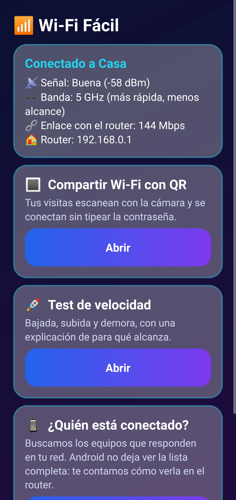
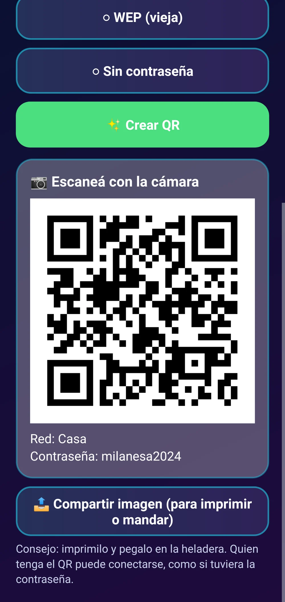
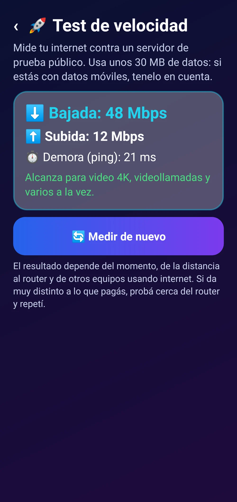
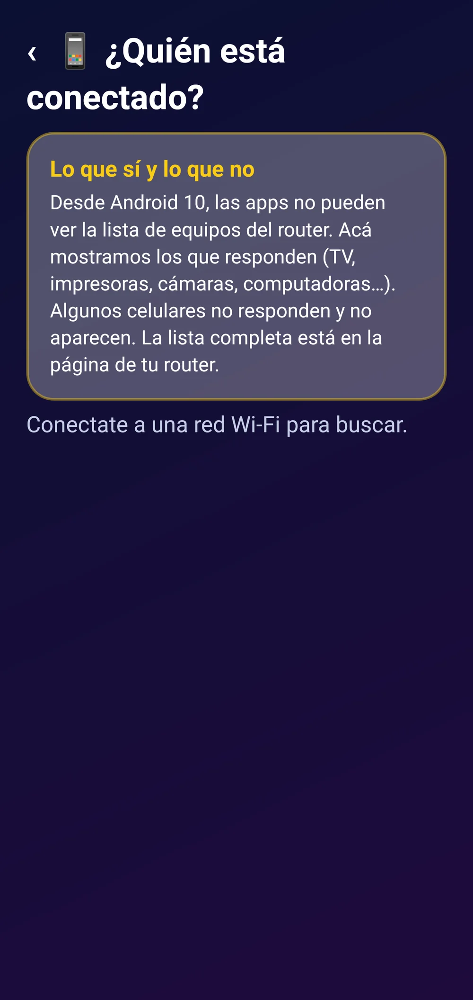
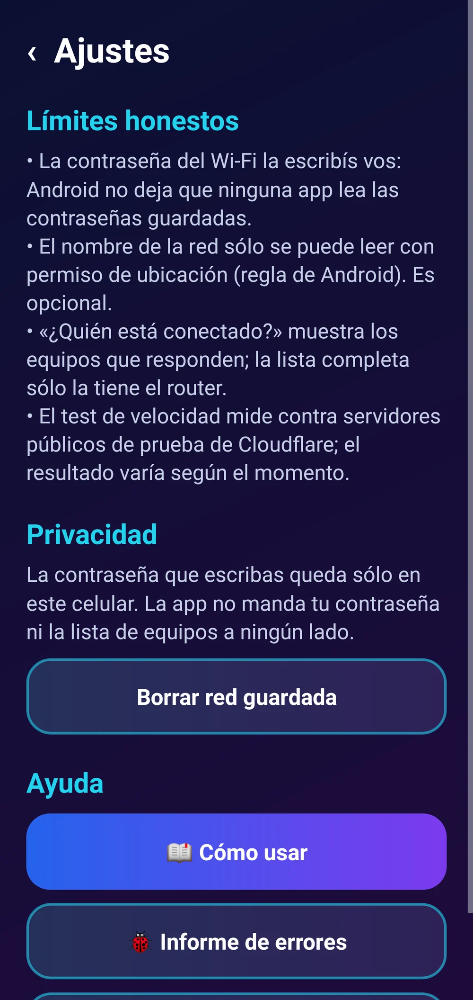

Wi-Fi Fácil
Compartí tu Wi-Fi con un QR, medí la velocidad y mirá qué equipos responden en tu red, con los límites de Android explicados.
QR para las visitas, test de velocidad y quién está en tu red, sin vueltas.
Límites de Android: ninguna app común puede leer las contraseñas Wi-Fi guardadas ni ver la lista completa de equipos conectados (eso sólo lo sabe el router). El nombre de la red sólo se lee con permiso de ubicación. El test usa unos 30 MB de datos y su resultado varía según el momento.
Para celulares Android 9 o más nuevos.
Sin publicidad. Nunca.Pagás una vez y la app es tuya: sin banners, sin videos que te hacen esperar, sin interrupciones. Por qué cobramos
 Tu Wi-Fi, fácil
Tu Wi-Fi, fácil

Señal, banda y router

QR para tus visitas

Velocidad explicada en criollo

Equipos que responden en tu red

Límites honestosLo que la hace distinta
- 🔳 Tus visitas se conectan escaneando, sin dictar la contraseña.
- 🚀 Velocidad explicada: para qué te alcanza.
- 📱 Los equipos que responden en tu red, y cómo ver la lista completa.
- 🤝 Honesta: te dice lo que Android no deja hacer.
- 🔒 Tu contraseña queda sólo en tu celular.
Qué es
Wi-Fi Fácil junta tres cosas que todos necesitamos: un QR para que tus visitas se conecten sin tipear la contraseña (lo leen las cámaras de Android y de iPhone), un test de velocidad de bajada, subida y demora explicado en criollo, y una búsqueda de los equipos que responden en tu red (TV, impresoras, cámaras, computadoras). Te muestra la señal, la banda y el router. Y te dice con honestidad lo que Android no permite: leer contraseñas guardadas o ver la lista completa de conectados.
Qué hace
- Genera un QR con el nombre y la contraseña de tu Wi-Fi para que otros se conecten escaneándolo; podés compartirlo como imagen.
- Mide bajada, subida y demora contra los servidores públicos de prueba de Cloudflare y te dice para qué alcanza.
- Busca los equipos que responden en tu red local (puertos comunes y servicios anunciados) y te abre la página del router para ver la lista completa.
- Muestra la señal, la banda, la velocidad de enlace y la dirección del router.
Requisitos
- Celular Android 9 o más nuevo
- Wi-Fi para la velocidad y los equipos
- Ubicación opcional (sólo para leer el nombre de la red)
Funciones
- QR estándar para compartir el Wi-Fi
- Compartir la imagen del QR para imprimir
- Test de bajada, subida y demora
- «Para qué alcanza» tu velocidad
- Equipos que responden en tu red
- Señal, banda (2,4/5 GHz) y router
- Límites de Android explicados
Cómo se instala
- Descargá el APK e instalalo (si Android pregunta, permití instalar desde el navegador).
- Para el QR, escribí el nombre y la contraseña de tu Wi-Fi una vez.
- Para comprar: «Activar» → «Comprar con Mercado Pago».
Novedades
- 1.0.2 — Pulido visual: nuevo diseño SumoSoft con intro animada, selector de colores y tema (claro/oscuro/automático) que se ve bien en pantallas angostas, mejor legibilidad. Al activar la licencia desaparece todo rastro de la prueba.
- 1.0.0 — Primera versión.